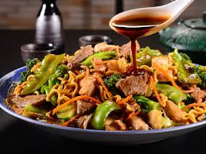
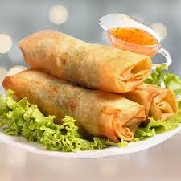
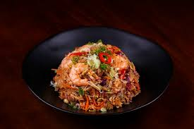

Sobre a culinária chinesa
A culinária chinesa é uma das mais antigas e influentes do mundo, marcada pela grande diversidade de ingredientes, temperos e técnicas de preparo. Cada região da China possui características próprias, proporcionando uma enorme variedade de sabores e experiências gastronômicas.
Pratos tradicionais como yakisoba, arroz frito, pato laqueado e rolinho primavera conquistaram admiradores em diversos países. Além do sabor, a gastronomia chinesa valoriza o equilíbrio entre os ingredientes, as cores dos alimentos e a harmonia entre os diferentes sabores presentes em cada refeição.
Pratos populares

Yakisoba
Macarrão salteado com legumes, carnes e molho, sendo um dos pratos chineses mais conhecidos.

Rolinho Primavera
Massa fina e crocante recheada com legumes, carnes ou outros ingredientes.

Arroz Frito
Prato preparado com arroz, ovos, vegetais e carnes, muito presente na culinária chinesa.